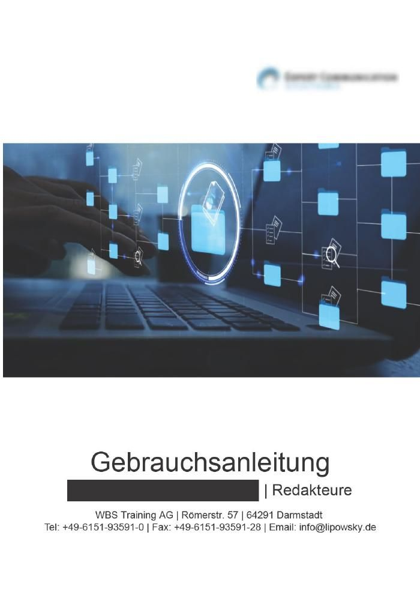
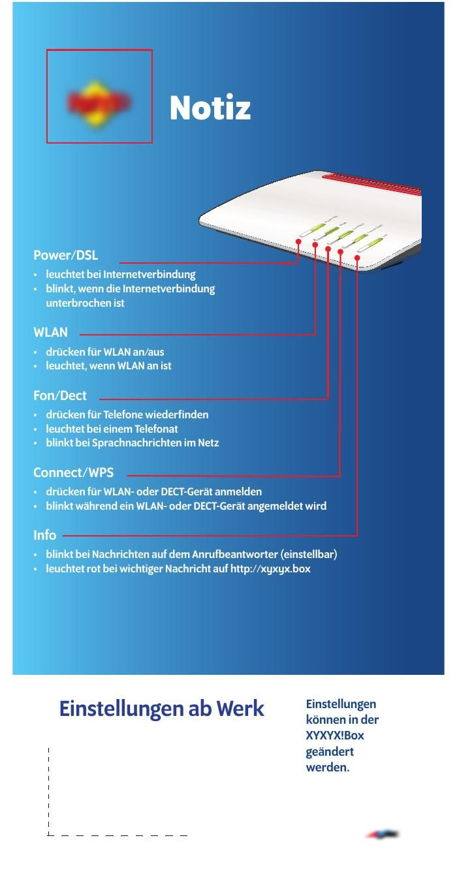
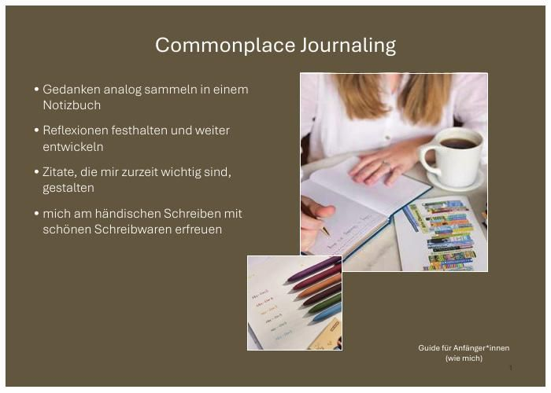

portfolio / start
Hallo.
Ich bin Miriam Küster.
Technische Redakteurin (tekom-Zertifikat)
M.A. Internationale Fachkommunikation – Sprachen und Technik
- Technische Dokumentation
- Terminologie-Management
portfolio / arbeitsproben
Arbeitsproben

Kurzanleitung für einen Router
PDF ansehen ↗
Privates Projekt
Commonplace Journaling
PDF ansehen ↗portfolio / über mich
Über mich
Technische Dokumentation ist mein fachliches Zuhause – gelernt im Studium der Internationalen Fachkommunikation – Sprachen und Technik (M.A.), vertieft in mehreren Jahren Praxis zwischen Software- und Maschinenbau-Dokumentation. Nach Zwischenstationen im Übersetzungsmanagement und im Newsletter-Marketing kehre ich dorthin zurück. Die Weiterbildung zur technischen Redakteurin mit tekom-Zertifikat, die ich Ende September 2026 abschließe, rundet das ab.
portfolio / impressum
Impressum
Miriam Küster
Kuckuckstr. 7
31137 Hildesheim
E-Mail: info@miriam-kuester.de
Verantwortlich für den Inhalt
Miriam Küster
Kuckuckstr. 7
31137 Hildesheim
portfolio / datenschutzerklärung
Datenschutzerklärung
1. Verantwortliche Stelle
Miriam Küster, Kuckuckstr. 7, 31137 Hildesheim,
E-Mail: info@miriam-kuester.de
2. Allgemeine Hinweise
Diese Website dient als Portfolio zur Vorstellung meiner beruflichen Qualifikationen und Arbeitsproben. Der Schutz Ihrer persönlichen Daten ist mir wichtig. Diese Datenschutzerklärung informiert Sie darüber, welche Daten bei einem Besuch dieser Website erhoben werden und wie diese verwendet werden.
3. Hosting
Diese Website wird über GitHub Pages gehostet, einen Dienst der GitHub Inc., 88 Colin P. Kelly Jr. Street, San Francisco, CA 94107, USA. GitHub verarbeitet dabei ggf. technische Zugriffsdaten (z.B. IP-Adresse, Datum und Uhrzeit des Zugriffs) in sogenannten Server-Logfiles, um den Betrieb der Website zu ermöglichen.
Weitere Informationen: GitHub Privacy Statement ↗
4. Kontaktaufnahme per E-Mail
Wenn Sie mich per E-Mail kontaktieren, werden Ihre Angaben (E-Mail-Adresse, ggf. Name und Nachricht) zum Zweck der Bearbeitung Ihrer Anfrage gespeichert. Diese Daten werden nicht ohne Ihre Einwilligung an Dritte weitergegeben.
5. Ihre Rechte
Sie haben jederzeit das Recht auf Auskunft über Ihre bei mir gespeicherten personenbezogenen Daten, deren Herkunft und Empfänger sowie den Zweck der Datenverarbeitung. Ebenso haben Sie ein Recht auf Berichtigung oder Löschung dieser Daten. Bei Fragen dazu können Sie sich jederzeit über die oben angegebene E-Mail-Adresse an mich wenden.